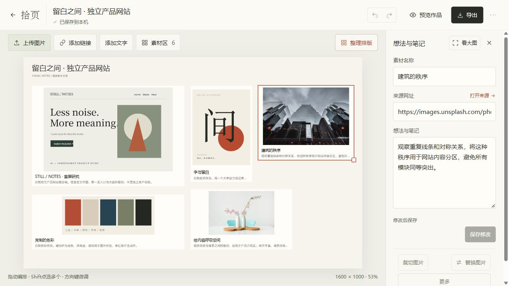
改前为第三轮8a87825运行，改后为第四轮77d2547的4186生产构建。四种实际CSS视口，同一原稿与选择。截图不是概念稿；操作结论来自隔离实操与产物核对。
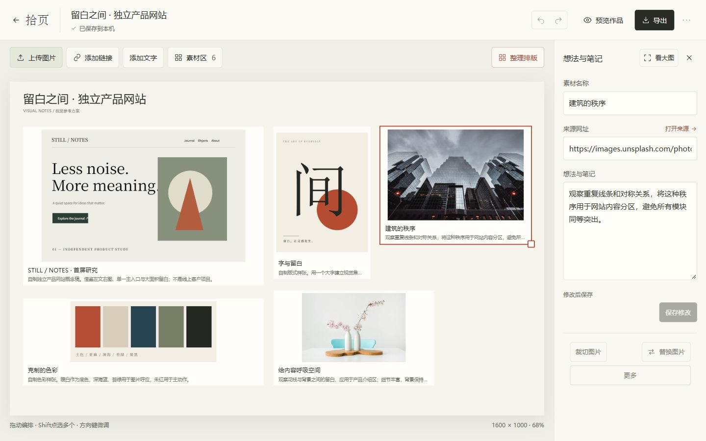

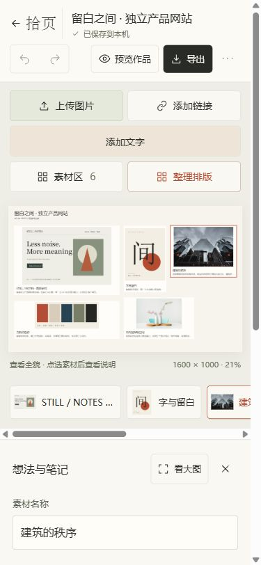
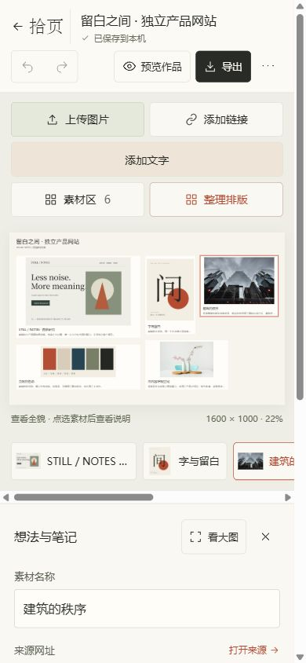
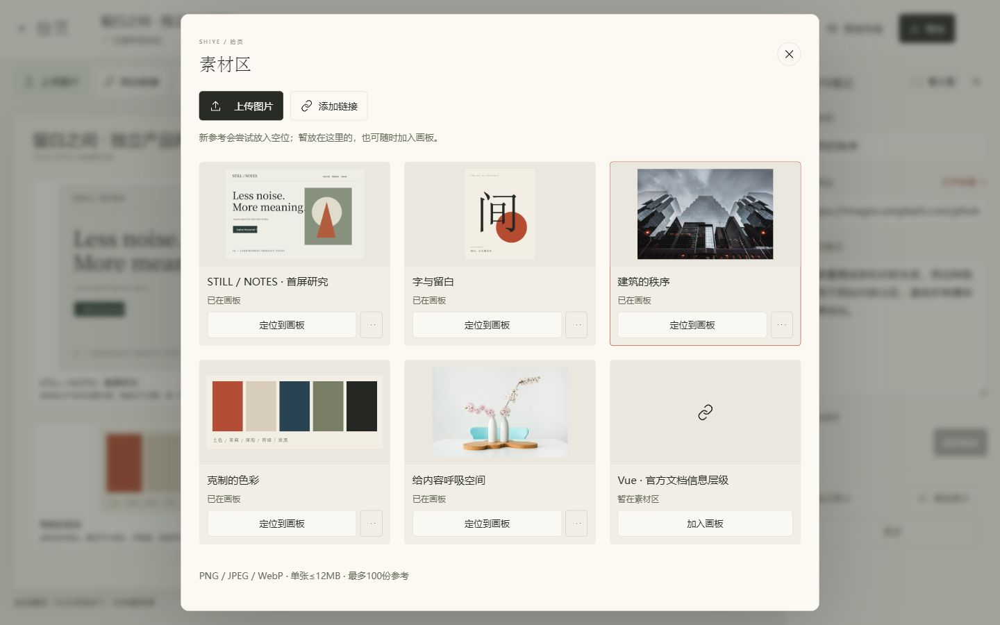
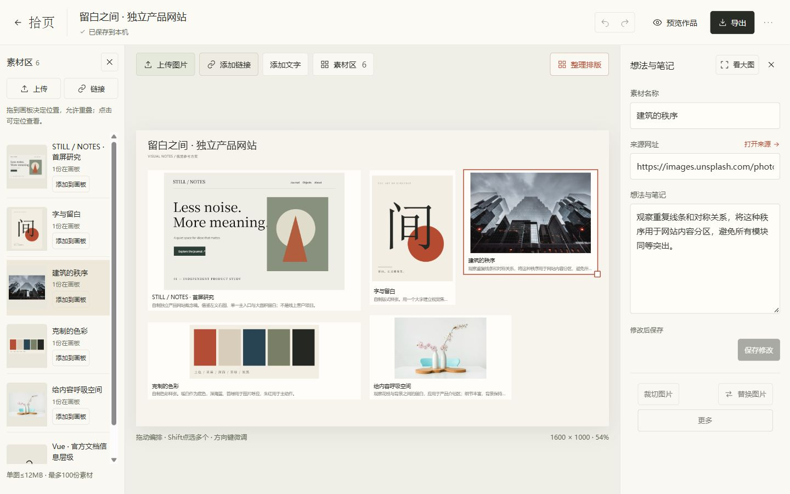
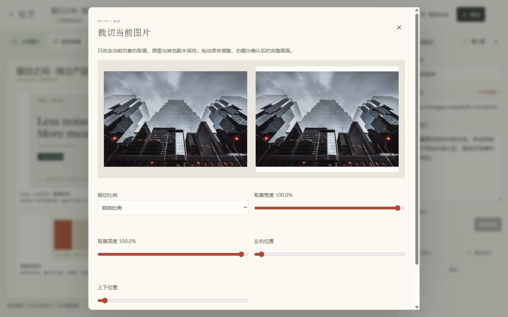
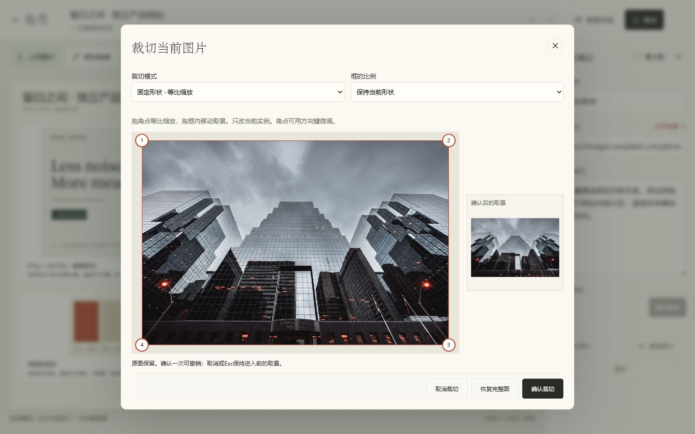
自制标记测试稿，凸四点最终稿；不透视拉伸，轮廓以外透出画板，底部笔记独立保留。
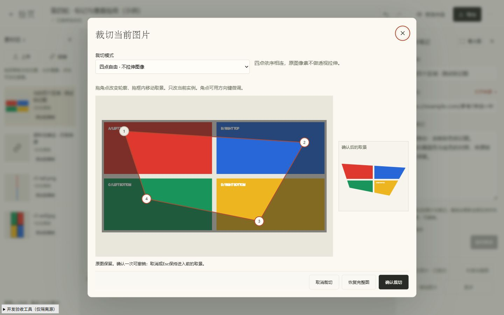
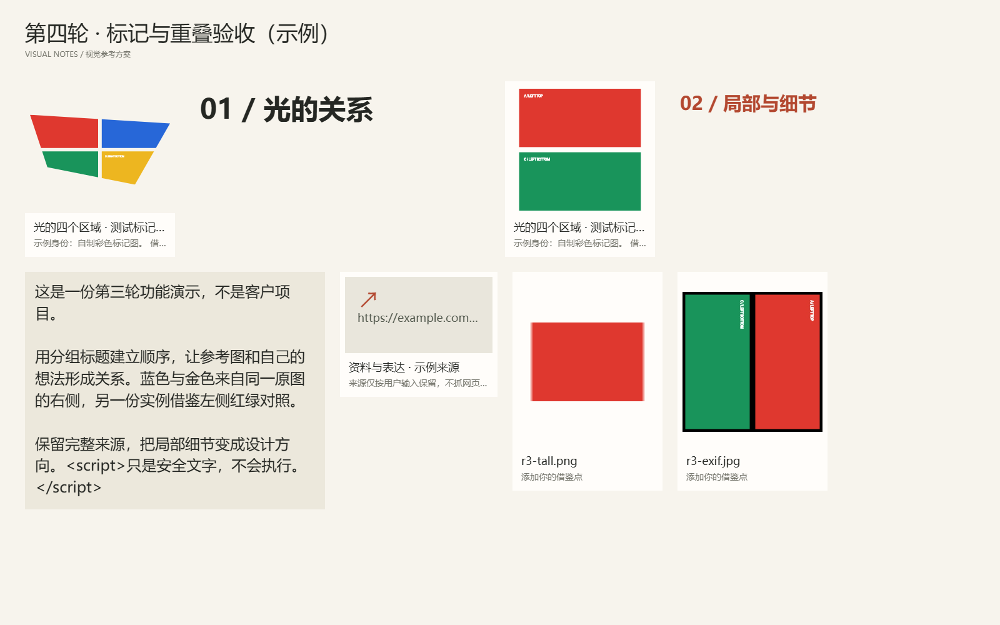
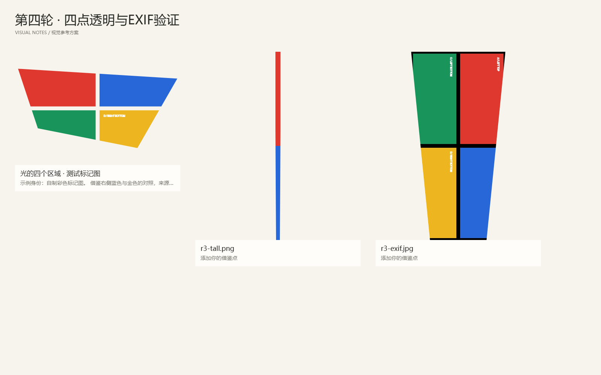
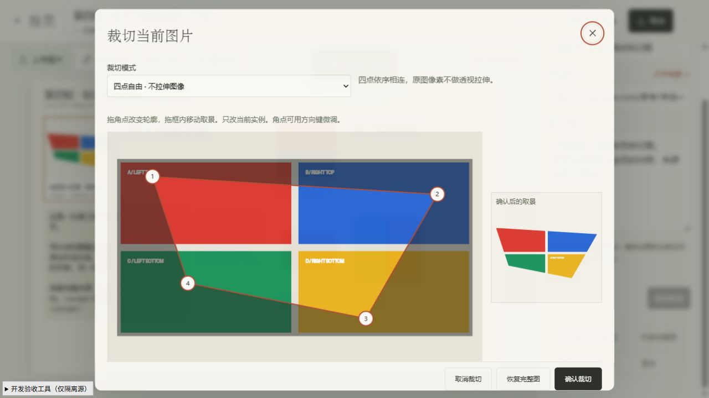
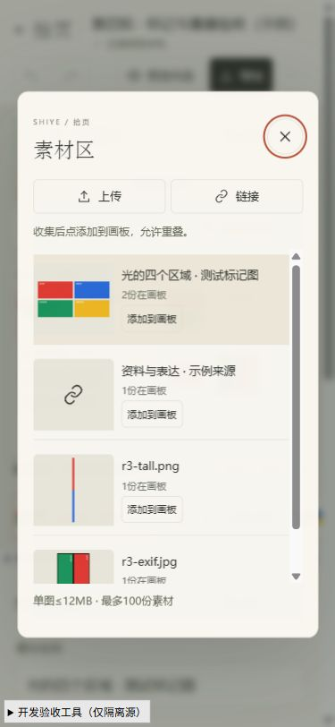
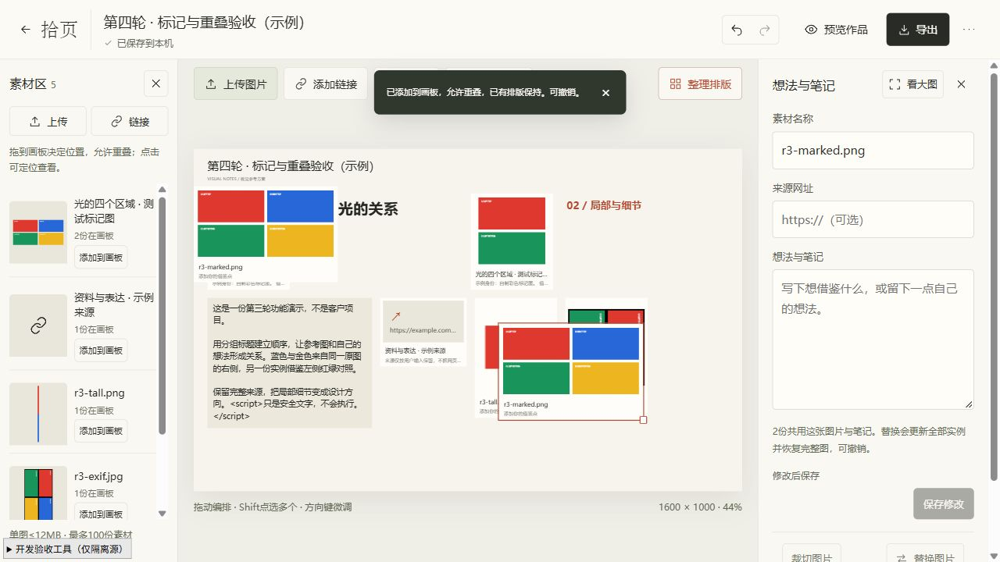
手机/IME为模拟；Ctrl+C/V采用标准合成键盘事件，未验证OS剪贴板。Backspace/Delete、Ctrl+Z/Shift+Z和鼠标为实际输入。本轮未推送、未部署。